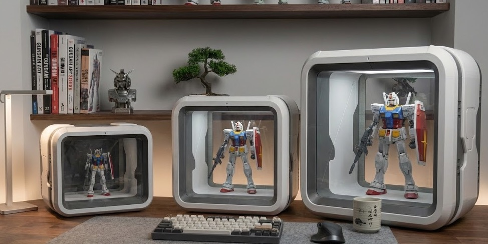
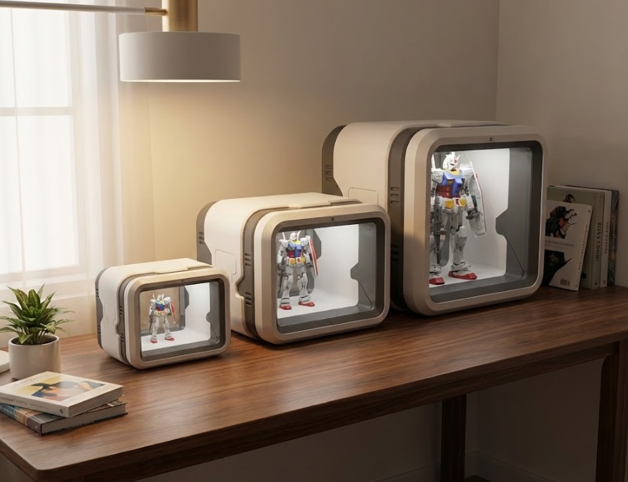
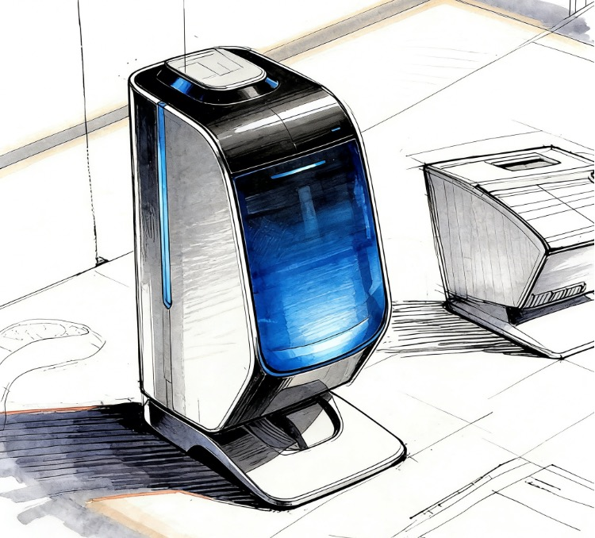
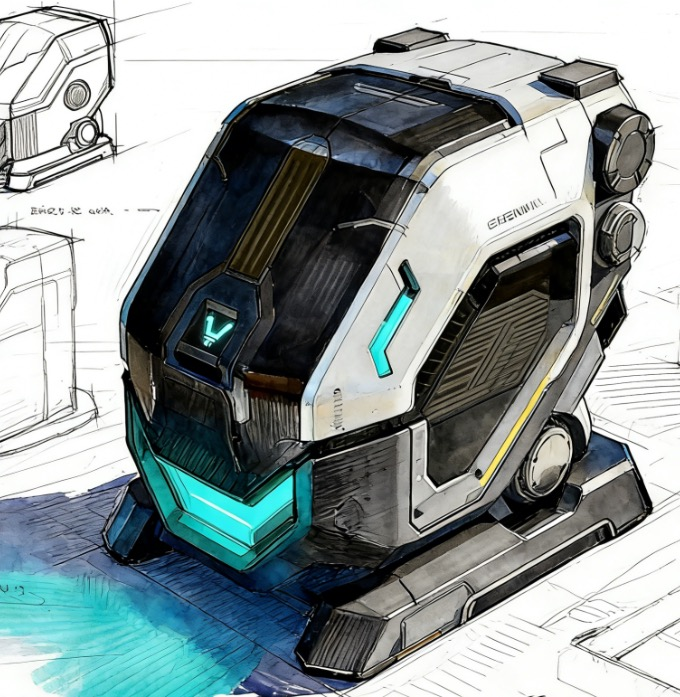
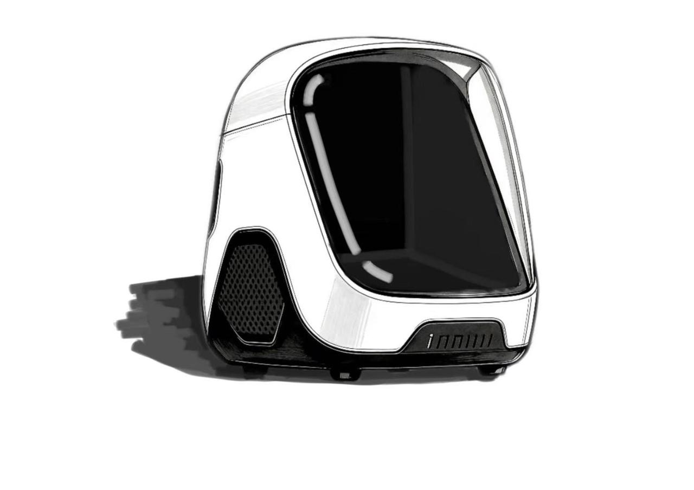

Display展示
A clear front window and staged interior keep posture, weapon lines, and scale readable.高透视窗与内置场景墙，让姿态、武器线条和比例一眼可读。

Starbox combines lighting, mist, scene direction, and connected control in a desktop display bay made for 1:60 scale machines. Starbox 把灯光、雾化、场景叙事和智能控制整合进一个桌面级展示舱，让 1:60 机体拥有真正属于自己的舞台。
Starbox keeps scale, atmosphere, AI scene control, and firmware evolution in one system. Starbox 把比例适配、灯光氛围、AI 场景控制和系统升级收进同一套体验里。


After a model is finished, the problem is not storage. The problem is how to preserve its character, scale, and presence. Starbox turns the builder's desk into a controllable miniature stage and digital hangar. 完成模型之后，难的不是收纳，而是如何保留它的角色感、比例感和现场感。Starbox 希望把玩家的工作台延伸成一个可控的微型展示场和数字格纳库。
A clear front window and staged interior keep posture, weapon lines, and scale readable.高透视窗与内置场景墙，让姿态、武器线条和比例一眼可读。
Lighting and mist create moods for standby, repair, launch, and night display.灯光与雾化把待机、整备、出击和夜间展示做成可切换状态。
AI prompts, mobile control, and OTA updates keep the display evolving.AI 场景提示、移动端控制和 OTA 更新，让展示持续进化。
Move from static display to a programmable digital hangar.把模型展示从静态陈列推进到可编排的数字机库。

Generate lighting and scene cues from model type, color, and story setting.根据机体、配色和故事设定生成灯光与场景建议。
Run battle, maintenance, inspection, and late-night display modes.支持战斗、整备、检修、深夜展示等多种动态氛围。
Add depth around the feet without hiding the model or breaking scale.在模型脚下制造体积感，不遮挡主体也不破坏比例。
Reserve space for specs, callsigns, and narrative overlays.为参数、机体编号和剧情信息预留未来交互空间。
Extend across sizes, scales, and themed interior kits.不同尺寸、比例与主题场景可按产品线扩展。
Designed for future temperature and humidity monitoring.预留温湿度监测与长期展示保护能力。
The shell, window, inner bay, light strips, base, and control zone each have a job. Showing the structure matters because this is hardware being engineered, not a concept render. 外壳、视窗、内舱、灯带、底座和控制区各自承担明确职责。展示结构细节，是为了让海外用户相信这不是一张概念图，而是正在被工程化的硬件。


The reflections, texture, and bench-level imperfections make the product more believable than a polished mockup.保留真实图像的颗粒、反光和工作台痕迹，比过度修饰更有说服力。

Join the first tester cohort and help shape the Starbox specs, scene library, and intelligent workflow.成为首批体验用户，参与 Starbox 的产品规格、场景库和智能工作流共创。